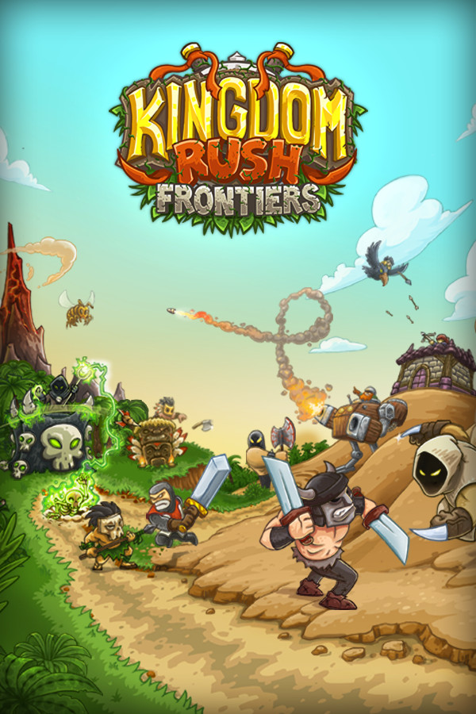

Kingdom Rush Frontiers
Kingdom Rush Frontiers
Details
|  | |
| Spielzeit | Nicht gespielt |
| Letzte Aktivität | Nie |
| Hinzugefügt | 04.12.2021 15:22:04 |
| Modifiziert | 12.12.2022 1:33:17 |
| Fertigstellungsstatus | Not Played |
| Bibliothek | Playnite |
| Quelle | |
| Plattform | PC (Windows) |
| Veröffentlichungsdatum | 25.07.2016 |
| Community Bewertungen | 93 |
| Kritiker Punkte | |
| Benutzerwertung | |
| Genre | ⚙️ Strategie |
| Entwickler | Ironhide Game Studio |
| Verleger | Ironhide Game Studio |
| Eigenschaft | Achievements Cloud Saves Single Player Steam Karten |
| Links | Communityhub Diskussionen Guides Neuigkeiten Shopseite PCGamingWiki Errungenschaften |
| Tag | |
Beschreibung
The world's most devilishly addictive defense game is back - welcome to Kingdom Rush: Frontiers!
Bigger and badder than ever before, Kingdom Rush: Frontiers is a whole new level of the furiously fast, enchantingly charming gameplay that made the original title an award-winning hit. Command your troops through an epic (mis)adventure as you defend exotic lands from dragons, man-eating plants, and ghastly denizens of the underworld -all with flashy new towers, levels, heroes, and more goodies to help you crush your foes to a pulp. (Don't worry, we've still got all the good ol' stuff from the last game, too. It's vintage now.)
Kingdom Rush: Frontiers packs in so much content, it's like a fully upgraded artillery blast of mouthwatering, pixelated joy launched right into your smiling little face... and it hurts so good!
Bigger and badder than ever before, Kingdom Rush: Frontiers is a whole new level of the furiously fast, enchantingly charming gameplay that made the original title an award-winning hit. Command your troops through an epic (mis)adventure as you defend exotic lands from dragons, man-eating plants, and ghastly denizens of the underworld -all with flashy new towers, levels, heroes, and more goodies to help you crush your foes to a pulp. (Don't worry, we've still got all the good ol' stuff from the last game, too. It's vintage now.)
Kingdom Rush: Frontiers packs in so much content, it's like a fully upgraded artillery blast of mouthwatering, pixelated joy launched right into your smiling little face... and it hurts so good!
Key Features
- Fantastic Tower Defense game with lots of strategic decisions. Great power-user stuff like Reinforcements, Meteor Strikes, Heroes and more.
- Fortify the frontier in exotic news lands - hold the line in deserts, jungles and even the underworld!
- Eight new specialized tower upgrades! Slice, sizzle, and stomp your foes with Crossbow Forts, Mighty Templars, Necromancers, and even Earthquake Machines - hey, we told you we were shaking things up.
- Over 18 tower abilities! Unleash Death Riders, pestilence clouds, or Assassins that steal and kill your enemies!
- Over 40 enemies with unique abilities! Stay on your toes as you fight through desert sandworms, tribal shamans, nomad tribes and underground terrors.
- 9 legendary heroes. Choose your champions and train their abilities! Each has unique specialties that fit different play styles! and More to come!
- Special units and features on every stage! Watch out for the Black Dragon!
- Merciless boss fights! Hey, we told you to get those upgrades...
- Upgrade system allows you to min/max your towers towards your preferred strategy.
- Hours of gameplay with over 70 achievements!
- Classic, Iron, and Heroic game modes to challenge your tactical skills!
- Three difficulty modes! Are you up for a real challenge? Go with Hard mode!
- Intoxicating charm with a rousing score, full-bodied voice-overs and lovingly illustrated cartoon art! (Complete with cartoon blood, naturally.)
- In-game encyclopedia! True warriors know thine enemies... and their towers. Study up!